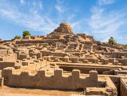
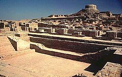
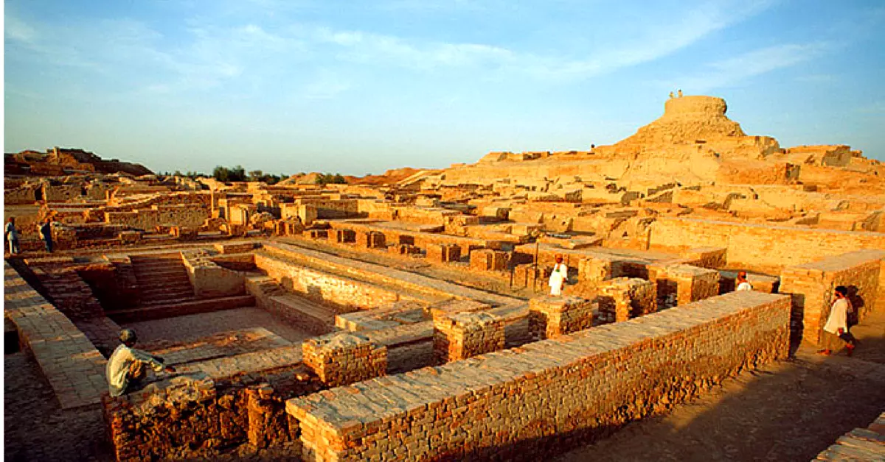

Ancient Indus Valley Civilization
Mohenjo-daro, meaning "Mound of the Dead," was a premier, highly advanced urban center of the ancient Indus Valley Civilization in Pakistan, flourishing around 2500–1900 BCE. Known for its grid-like city planning, sophisticated sanitation, and baked-brick architecture, it is a UNESCO World Heritage site. Key Facts About Mohenjo-daro: Location and Discovery: Situated in the Sindh province of Pakistan on the right bank of the Indus River. It was discovered in 1922 by R.D. Banerji, an officer of the Archaeological Survey of India. Urban Planning and Infrastructure: The city was divided into a fortified "Citadel" (likely for administrative/religious buildings) and a "Lower Town" for residential living. It featured a complex sewage system, wells for water, and streets arranged in a grid pattern. Key Structures: The Great Bath: A waterproofed tank believed to be used for religious rituals or public bathing. Granary: A large structure for storing grain. Population and Economy: At its peak, the city was home to an estimated 35,000 to 50,000 people. The economy was based on agriculture, trade, and craft production, with artifacts including seals, pottery, and tools discovered. Civilization and Culture: It was one of the world's first, most advanced cities of the Bronze Age, roughly contemporaneous with ancient Egypt and Mesopotamia. Abandonment: The city was abandoned around 1900 BCE, likely due to climate change, shifting river paths, or the drying up of water sources. Conservation: Only about 10–30% of the site has been excavated. It is currently endangered by erosion and requires ongoing conservation efforts
Mohenjo-daro, a major city of the Indus Valley Civilization (c. 2500–1900 BCE) in Pakistan, was a remarkably advanced, planned urban center featuring baked brick buildings, complex drainage, and a population of 40,000–50,000. Rediscovered in the 1920s, it served as a likely capital before its mysterious decline, potentially due to climate change, changing river paths, or migration. Rise and Peak (c. 2500–1900 BCE) Foundation: Built around 2500 BCE, Mohenjo-daro was one of the largest and most sophisticated cities of the ancient Indus Valley Civilization (also known as the Harappan Civilization). Location: Situated on the right bank of the Indus River in modern-day Sindh Province, Pakistan, it served as a major center for commerce and administration. Urban Design: The city was renowned for its advanced engineering, featuring a grid-like street layout, multi-story houses made of baked bricks, and a sophisticated sewage and drainage system. Key Structures: Notable features included a "Citadel" for public buildings (including the Great Bath and a possible granary) and a "Lower Town" for residential areas. Population: At its peak, the city was home to approximately 40,000 to 50,000 residents. Life and Culture Water Management: The inhabitants placed a heavy emphasis on water, with wells, private baths in homes, and the monumental Great Bath likely used for ritual cleansing. Economy: The city was a metropolis with a well-organized civic, social, and economic system, likely relying on agriculture and trade. Uncertainties: The Indus script remains undeciphered, leaving many aspects of their social structure, religion, and governance unknown. Decline and Rediscovery Abandonment: The city began to decline around 1900 BCE, with full abandonment occurring by roughly 1700 BCE. Causes: Theories for the collapse include climate change, drought, a shift in the course of the Indus River, or a breakdown in trade systems, rather than a violent invasion. Rediscovery: The ruins were rediscovered in 1922 by archaeologist R. D. Banerji, a year after the discovery of Harappa. UNESCO Status: It was designated a UNESCO World Heritage Site in 1980, recognized as the best-preserved urban settlement in South Asia from that era.
Images
  